Imagens do Rio Grande do Sul
Confira belas imagens da natureza, cultura e gastronomia do nosso estado.
Pontos Turísticos

Gramado: charme europeu na Serra Gaúcha
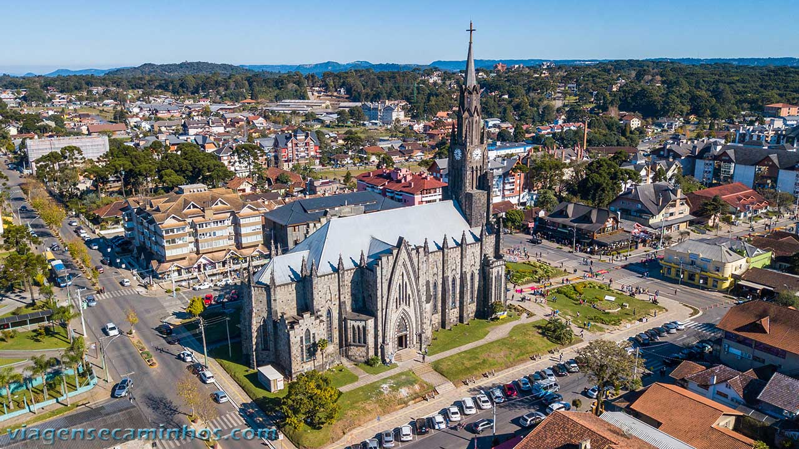
Canela: natureza e arquitetura
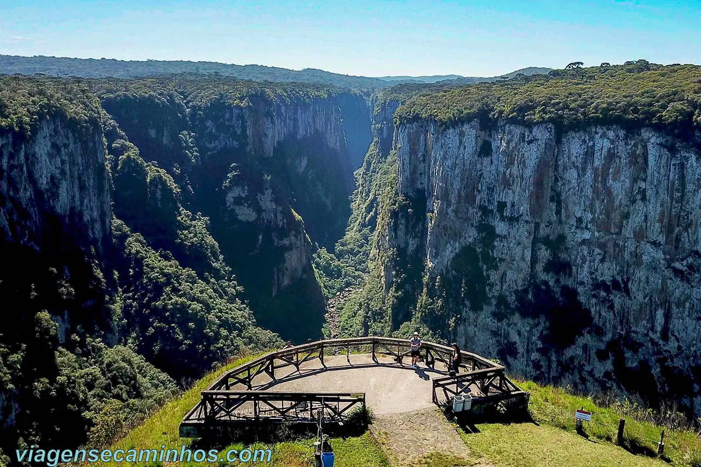
Itaimbezinho: beleza natural dos Aparados da Serra

Praia do Cassino: maior praia do mundo
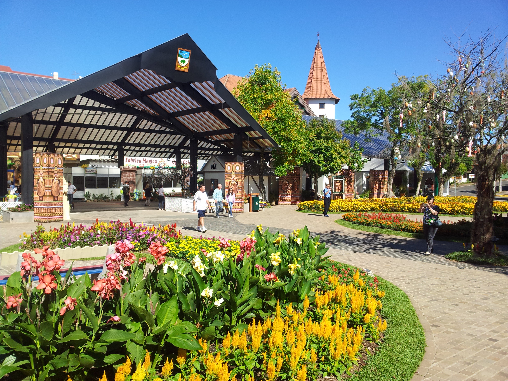
Nova Petrópolis: herança germânica nas hortênsias

Ruínas de São Miguel das Missões: Patrimônio Histórico
Cultura e Tradições
O Rio Grande do Sul mistura influências indígenas, europeias e tropeiras. A pilcha, o chimarrão e o fandango são símbolos vivos dessa herança.
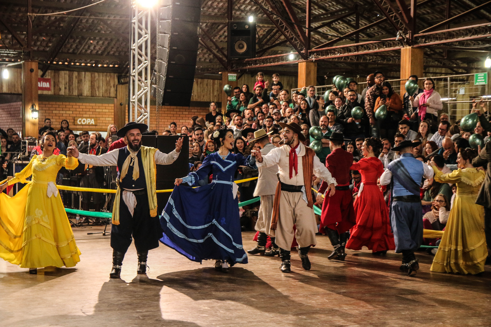
Semana Farroupilha: orgulho gaúcho
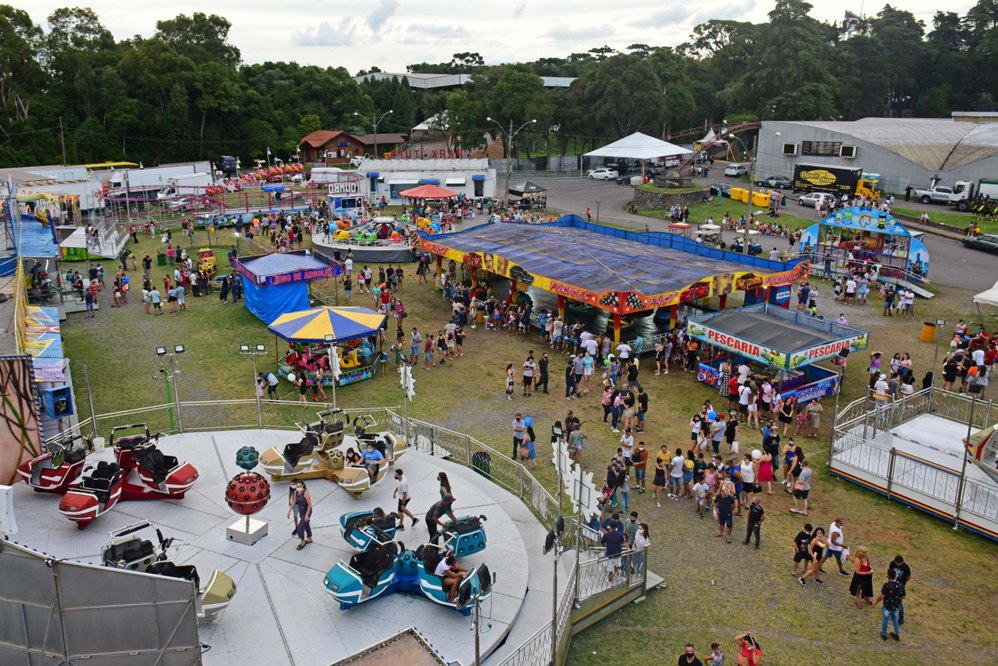
Festa da Uva: celebração italiana
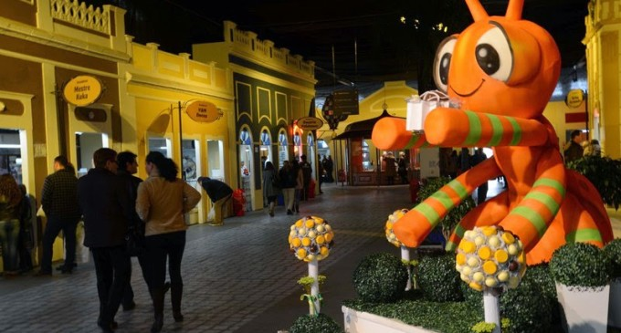
Fenadoce: doces e tradição de Pelotas
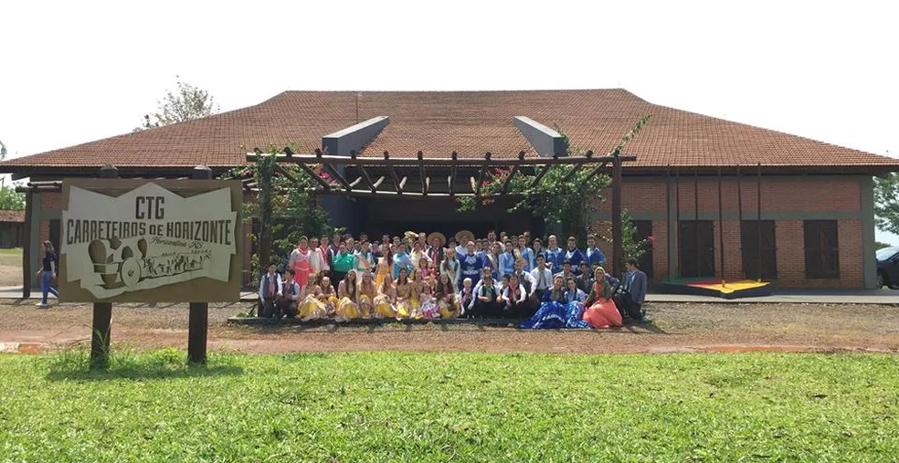
CTG: cultura viva nas danças e no laço
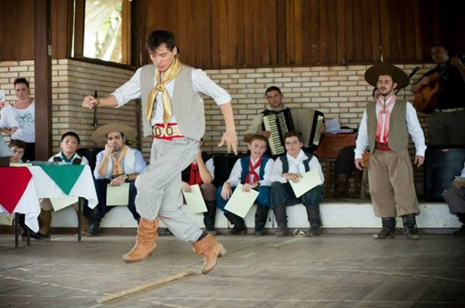
Chula: sapateado tradicional do gaúcho
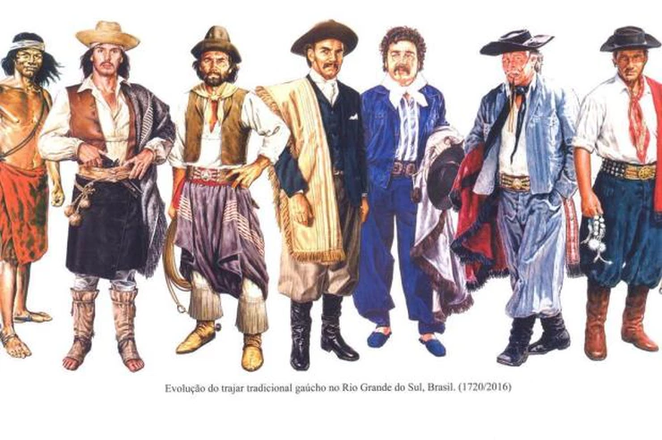
Pilcha: vestimenta oficial do gaúcho
Gastronomia Típica
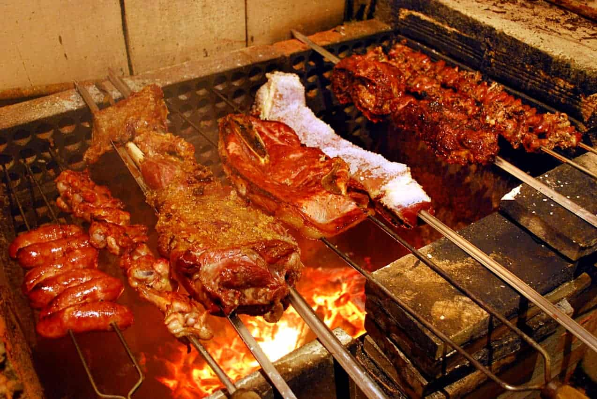
Churrasco: tradição dos galpões

Arroz de Carreteiro: prato dos tropeiros
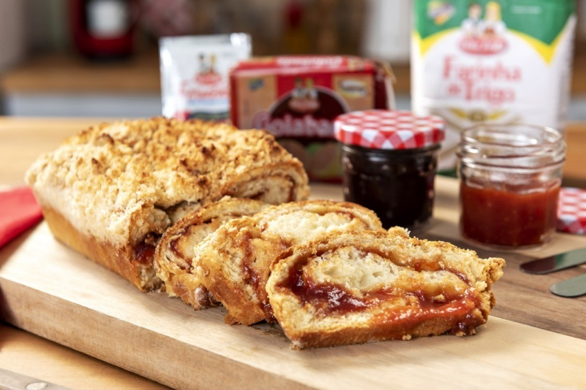
Cuca: pão doce de origem alemã
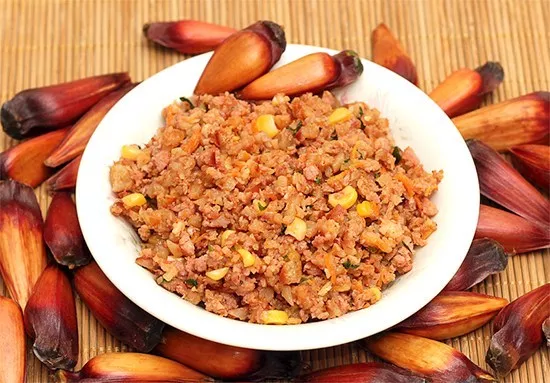
Pinhão: cozido no fogão à lenha
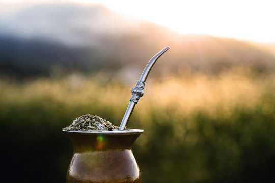
Chimarrão: símbolo de união
Galeto: especialidade da Serra Gaúcha